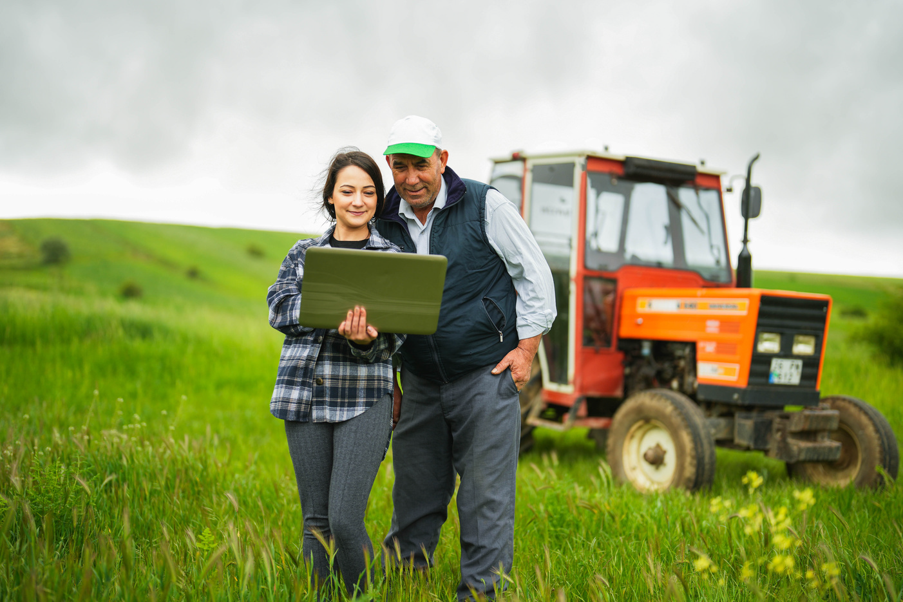

მოაგვარე პრობლემა
მარტივად
თუ სოფლის მეურნეობას ეწევი და გამოცდილი, უცხოელი აგრონომის დახმარება გჭირდება, მარტივად შეგიძლია დარეგისტრირდე TELAGRI-ში, იპოვო შენთვის სასურველი მიმართულების აგრონომი და მიიღო შესაბამისი კონსულტაცია. პლატფორმაზე რეგისტრაცია უფასოა, კონსულტაციის თანხას კი სპეციალისტი წყვეტს.


ტელემედიცინა შენი
მეურნეობისთვის.

რა არის TELAGRI?
TELAGRI ონლაინ პლატფორმაა, რომელიც გამოცდილ, უცხოელ აგრონომებსა და ფერმერებს აკავშირებს ერთმანეთს, რათა გაიზარდოს სოფლის მეურნეობის ეფექტიანობა და ფერმერებმა პრობლემები მარტივად გადაჭრან.